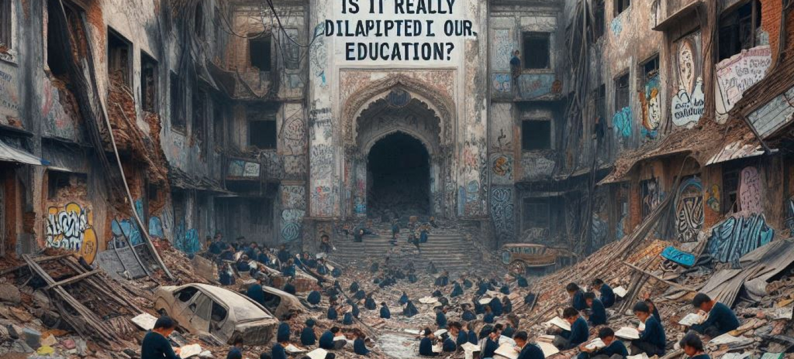

Seburuk Apa Pendidikan Kita Sekarang? Apa Benar Sebobrok itu Pendidikan Kita?
Pendidikan
oleh : Mulya | 21/06/2024
15 menit dibaca

Pendidikan merupakan salah satu pilar utama dalam membangun suatu bangsa. Di Indonesia, sistem pendidikan sering menjadi bahan perbincangan, kritik, dan evaluasi. Banyak yang mempertanyakan kualitas pendidikan saat ini dan apakah benar pendidikan kita seburuk yang sering diberitakan. Artikel ini akan mengulas berbagai aspek dari sistem pendidikan di Indonesia, tantangan yang dihadapi, pandangan dari berbagai pihak, dan upaya yang dilakukan untuk perbaikan.
Latar Belakang Pendidikan di Indonesia
Sistem Pendidikan Nasional
Sistem pendidikan di Indonesia terdiri dari pendidikan dasar, menengah, dan tinggi. Pendidikan dasar mencakup Sekolah Dasar (SD) dan Sekolah Menengah Pertama (SMP), sedangkan pendidikan menengah terdiri dari Sekolah Menengah Atas (SMA) dan Sekolah Menengah Kejuruan (SMK). Pendidikan tinggi meliputi universitas, institut, sekolah tinggi, akademi, dan politeknik. Kurikulum pendidikan di Indonesia dirancang oleh Kementerian Pendidikan, Kebudayaan, Riset, dan Teknologi dan selalu mengalami perubahan dan penyesuaian untuk mengikuti perkembangan zaman.
Tujuan Pendidikan
Tujuan utama pendidikan di Indonesia adalah mencerdaskan kehidupan bangsa, mengembangkan potensi peserta didik agar menjadi manusia yang beriman, bertakwa, berakhlak mulia, sehat, berilmu, cakap, kreatif, mandiri, dan menjadi warga negara yang demokratis serta bertanggung jawab. Pendidikan juga bertujuan untuk membentuk karakter peserta didik melalui proses pembelajaran yang holistik dan integratif.
Tantangan Pendidikan di Indonesia
Kesenjangan Akses
Salah satu tantangan terbesar dalam pendidikan di Indonesia adalah kesenjangan akses. Di daerah perkotaan, akses terhadap pendidikan relatif lebih mudah dengan fasilitas yang memadai dan tenaga pengajar yang berkualitas. Namun, di daerah terpencil dan pedalaman, akses terhadap pendidikan masih sangat terbatas. Banyak sekolah yang kekurangan fasilitas dasar, buku, dan tenaga pengajar yang kompeten. Ini menyebabkan ketimpangan dalam kualitas pendidikan antara kota dan daerah terpencil.
Kualitas Pengajaran
Kualitas pengajaran menjadi isu krusial dalam sistem pendidikan di Indonesia. Banyak tenaga pengajar yang belum memenuhi standar kompetensi yang diharapkan. Pelatihan dan pengembangan profesional bagi guru sering kali kurang optimal. Akibatnya, metode pengajaran yang digunakan kurang inovatif dan tidak mampu merangsang kreativitas serta berpikir kritis pada siswa.
Kurikulum dan Evaluasi
Kurikulum pendidikan di Indonesia sering kali dianggap terlalu padat dan tidak relevan dengan kebutuhan zaman. Evaluasi yang berfokus pada nilai akademik membuat proses belajar menjadi kurang menyenangkan dan cenderung mengabaikan pengembangan karakter serta keterampilan non-akademis. Kurikulum yang terlalu sering berubah juga menyebabkan kebingungan bagi guru dan siswa dalam menyesuaikan diri.
Anggaran Pendidikan
Meskipun anggaran pendidikan di Indonesia telah ditingkatkan, alokasi dan pengelolaan dana masih menjadi tantangan. Banyak dana yang tidak sampai ke sekolah-sekolah yang membutuhkan karena birokrasi yang rumit dan masalah korupsi. Selain itu, dana yang ada sering kali tidak digunakan secara efektif untuk meningkatkan kualitas pendidikan.
Pandangan Berbagai Pihak
Pandangan Orang Tua
Banyak orang tua merasa khawatir dengan kualitas pendidikan di Indonesia. Mereka sering mengeluhkan beban kurikulum yang terlalu berat dan kurangnya perhatian terhadap pengembangan karakter anak. Orang tua juga menginginkan sistem pendidikan yang lebih fleksibel dan mampu menyesuaikan dengan bakat dan minat anak mereka.
Pandangan Siswa
Siswa sering merasa tertekan dengan sistem evaluasi yang berfokus pada nilai. Mereka menginginkan proses belajar yang lebih menyenangkan dan menantang. Banyak siswa merasa bahwa pendidikan yang mereka terima belum mampu mengembangkan potensi mereka secara maksimal.
Pandangan Guru
Guru di Indonesia menghadapi banyak tantangan, mulai dari beban administrasi yang tinggi hingga kurangnya dukungan untuk pengembangan profesional. Banyak guru yang merasa bahwa mereka tidak memiliki cukup waktu untuk fokus pada pengajaran karena harus mengurus berbagai tugas administratif. Mereka juga menginginkan lebih banyak pelatihan dan dukungan untuk meningkatkan kompetensi mereka.
Pandangan Akademisi dan Pengamat
Akademisi dan pengamat pendidikan melihat banyak potensi yang belum tergali dalam sistem pendidikan di Indonesia. Mereka menekankan perlunya reformasi yang komprehensif untuk meningkatkan kualitas pengajaran, memperbaiki kurikulum, dan memastikan akses pendidikan yang merata. Mereka juga menggarisbawahi pentingnya kolaborasi antara pemerintah, sekolah, dan masyarakat untuk menciptakan lingkungan belajar yang lebih baik.
Upaya Perbaikan
Reformasi Kurikulum
Salah satu langkah yang dilakukan untuk memperbaiki pendidikan di Indonesia adalah reformasi kurikulum. Kurikulum baru dirancang untuk lebih relevan dengan kebutuhan zaman dan mengembangkan keterampilan abad 21 seperti berpikir kritis, kreativitas, komunikasi, dan kolaborasi. Selain itu, penekanan juga diberikan pada pengembangan karakter dan pendidikan berbasis proyek untuk meningkatkan keterlibatan siswa.
Pelatihan Guru
Pelatihan dan pengembangan profesional bagi guru merupakan kunci untuk meningkatkan kualitas pengajaran. Pemerintah dan berbagai lembaga swadaya masyarakat telah mengadakan berbagai program pelatihan untuk meningkatkan kompetensi guru. Pelatihan ini mencakup metode pengajaran yang inovatif, penggunaan teknologi dalam pendidikan, dan pengembangan kurikulum yang efektif.
Peningkatan Fasilitas
Pemerintah juga berupaya meningkatkan fasilitas pendidikan, terutama di daerah terpencil. Pembangunan sekolah baru, perbaikan infrastruktur, dan penyediaan peralatan belajar yang memadai menjadi fokus utama. Selain itu, program bantuan seperti Kartu Indonesia Pintar (KIP) diharapkan dapat membantu siswa dari keluarga kurang mampu untuk tetap bersekolah.
Penggunaan Teknologi
Penggunaan teknologi dalam pendidikan menjadi salah satu solusi untuk meningkatkan kualitas belajar. E-learning dan platform pendidikan digital semakin banyak digunakan untuk mendukung proses belajar mengajar. Ini memberikan kesempatan bagi siswa untuk belajar secara mandiri dan guru untuk mengakses berbagai sumber daya pendidikan.
Pandangan Masa Depan
Pendidikan Inklusif
Masa depan pendidikan di Indonesia diharapkan lebih inklusif, memberikan kesempatan yang sama bagi semua anak, termasuk anak berkebutuhan khusus. Pendidikan inklusif bertujuan untuk mengintegrasikan semua siswa dalam lingkungan belajar yang sama, mengurangi stigma, dan meningkatkan rasa saling menghargai di antara siswa.
Pengembangan Keterampilan Abad 21
Pengembangan keterampilan abad 21 menjadi fokus utama dalam pendidikan masa depan. Siswa tidak hanya perlu menguasai pengetahuan akademik, tetapi juga keterampilan seperti berpikir kritis, kreativitas, komunikasi, dan kolaborasi. Pendidikan juga diharapkan dapat mempersiapkan siswa untuk menghadapi tantangan global dan menjadi warga dunia yang bertanggung jawab.
Kolaborasi dan Kemitraan
Kolaborasi antara pemerintah, sekolah, masyarakat, dan sektor swasta sangat penting untuk menciptakan sistem pendidikan yang lebih baik. Kemitraan dengan berbagai pihak dapat membantu menyediakan sumber daya, teknologi, dan program yang mendukung pendidikan. Dengan kerja sama yang baik, diharapkan kualitas pendidikan di Indonesia dapat terus meningkat.
Kesimpulan
Pendidikan di Indonesia menghadapi berbagai tantangan yang kompleks, mulai dari kesenjangan akses, kualitas pengajaran, kurikulum yang tidak relevan, hingga pengelolaan anggaran yang kurang efektif. Namun, ada banyak upaya yang telah dilakukan untuk memperbaiki situasi ini. Dengan reformasi kurikulum, pelatihan guru, peningkatan fasilitas, dan penggunaan teknologi, diharapkan pendidikan di Indonesia dapat terus berkembang. Pandangan masa depan pendidikan yang inklusif dan berfokus pada keterampilan abad 21 menjadi harapan untuk menciptakan generasi yang siap menghadapi tantangan global. Kolaborasi antara berbagai pihak juga sangat penting untuk mencapai tujuan ini. Meskipun jalan menuju perbaikan masih panjang, dengan komitmen dan kerja keras, sistem pendidikan di Indonesia dapat menjadi lebih baik dan memberikan dampak positif bagi masyarakat dan bangsa.

.png)